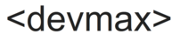

Data scientist
Data analysis using Python, SQL, and Power BI. Application of statistical and machine learning models such as XGBoost, ARIMA, SARIMA, and Prophet for classification, forecasting, and decision support. Statistical testing (Chi²) and development of performance indicators (KPIs).
Web application development with Django for operational task management. Automation of data workflows using VBA, Excel Query, and Python scripts. Integration and optimization of databases to enhance system performance and data accessibility.
Translating business needs into data solutions, designing monitoring reports (e.g., water and sanitation), and working closely with field teams to ensure data reliability. Implementation of centralized databases and dashboards for better operational insight.
Data scientist & developer based out of Marseille, France
Hello! I'm Max Biber, a Data Scientist and Django Developer with a strong background in mathematics and statistics. I have a passion for analyzing data and developing applications that optimize business processes. I am also an avid chess player and enjoy participating in tournaments. Additionally, I have a background in swimming and lifesaving, holding certifications in both areas.
I have a Master's degree in Data Science and a Bachelor's degree in Mathematics. My expertise includes Python, Django, machine learning, and data visualization. I am always eager to learn new technologies and improve my skills.
A selection of my range of work